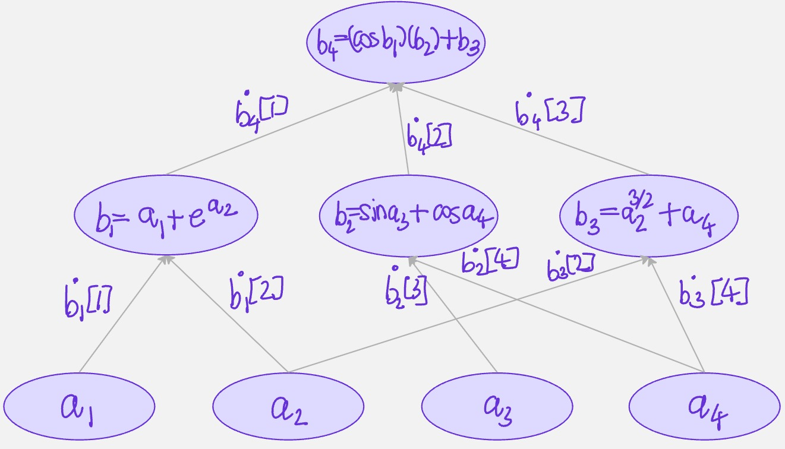
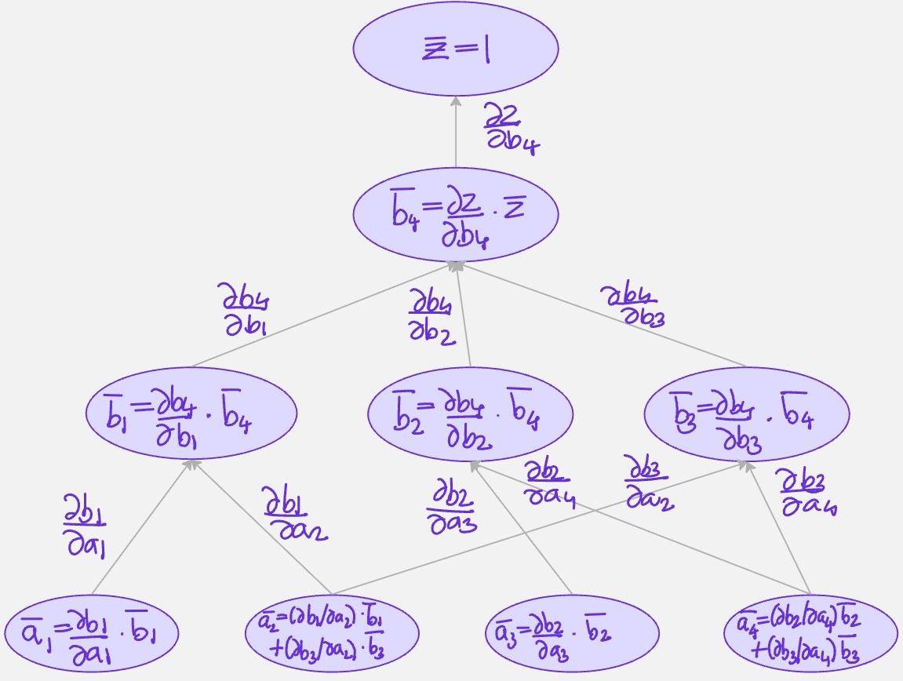

function f(a::Array{Real})
b = zeros(4)
b[1] = a[1] + exp(a[2])
b[2] = sin(a[3]) + cos(a[4])
b[3] = a[2] ^ (3/2) + a[4]
b[4] = cos(b[1]) * b[2] + b[3]
b[4]
endf (generic function with 1 method)Quasar
October 23, 2025
I was skimming through Luca Capriotti and Mike Giles’ paper 15 Years of Adjoint Algorithmic Differentiation in Finance and wanted to write a toy implementation in Julia. Algorithmic differentiation (AD) is a set of techniques to accurately and efficiently compute derivatives of a function in the form of a computer program. Many of my toy examples are borrowed from the excellent Algorithmic Differentiation in Finance Explained, by Marc Henrard.
As a quick example, suppose we have the scalar-valued function \(f:\mathbb{R}^{p_a} \to \mathbb{R}\):
\[ y = \cos(x_1 + e^{x_2})(\sin x_3 + \cos x_4) + x_2^{3/2} + x_4 \]
The function inputs are a vector a[1...p_a] of dimension \(p_a\). All intermediate values in the program will be denoted by bs. The output of the function is denoted by the variable z of dimension \(1\). So, the algorithm starts with the inputs a, goes to z through a lot of bs. The new variables are denoted by b[j] with j starting with 1 and going upto \(p_b\). There are \(p_b\) intermediate variables \(b\) in the program.
Standard algorithmic differentiation also called forward algorithmic differentiation or tangent algorithmic differentiation. Our goal is to compute \(\partial z/\partial a_i\). We achieve this by computing for each \(j\)(\(p_a + 1 \leq j \leq p_b\)) the value:
\[ \dot{b}[j,i] = \frac{\partial b[j]}{\partial a[i]} \]
We first initialize the variables \(b[j]\) from \(1 \leq j \leq p_a\) with the inputs values \(a[j]\). Note that the derivative is denoted by dot on the variable and \(\dot{b}[j,i]\) is the derivative of \(b[j]\) with respect to some other variable \(a[i]\). For \(j=1:p_a\), then, the derivative of \(b[j]\) with respect to \(a[i]\) is simply \(1\), if \(j=i\) and \(0\) if \(j \neq i\). This is the starting point of a recursive algorithm. The starting part is the identity matrix :
\[ \dot{b}[j,i] = \delta_{i,j} \]
where \(\delta_{i,j}\) represents Kronecker’s delta.
The successive derivatives \(\dot{b}[j,i]\) are given by the chain rule:
\[ \begin{align*} \dot{b}[j,i] = \frac{\partial b[j]}{\partial a[i]} &= \sum_{k=p_a + 1}^{k=j-1}\frac{\partial b[j]}{\partial b[k]} \cdot \frac{\partial b[k]}{\partial a[i]}\\ &= \sum_{k=p_a + 1}^{j-1} \frac{\partial}{\partial b[k]} (b[j]) \cdot \dot{b}[k,i]\\ &= \sum_{k=p_a + 1}^{j-1} \frac{\partial}{\partial b[k]} g_j(b[p_a + 1 : j - 1]) \cdot \dot{b}[k,i]\\ \end{align*} \]
The numbers \(\dot{b}[p_b,i]\) are equal to the derivatives of \(z=b[p_b]\) with respect to \(a_i\), \(1 \leq i \leq p_a\). This concludes the algorithm for the computation of \(\partial z/\partial a_i\).
The requirements for such an implementation is that all the intermediary functions \(g_j\) have a derivative version. The algorithmic differentiation approach is a bottom-up approach : it can be implemented for an algorithm only if all the components below it, all the components entering into the composition have already been implemented.

function f(a::Array{Real})
b = zeros(4)
b[1] = a[1] + exp(a[2])
b[2] = sin(a[3]) + cos(a[4])
b[3] = a[2] ^ (3/2) + a[4]
b[4] = cos(b[1]) * b[2] + b[3]
b[4]
endf (generic function with 1 method)We create an AD version of the starter function as follows:
function f_AD(x::Array{Real})
b = zeros(4)
b[1] = a[1] + exp(a[2])
b[2] = sin(a[3]) + cos(a[4])
b[3] = a[2] ^ (3/2) + a[4]
b[4] = cos(b[1]) * b[2] + b[3]
# Forward sweep - derivatives
n = length(x)
b1dot = zeros(n)
b1dot[1] = 1
b1dot[2] = exp(b[2])
b2dot = zeros(n)
b2dot[3] = cos(b[3])
b2dot[4] = -sin(b[4])
b3dot = zeros(n)
b3dot[2] = (3/2)*(b[2] ^ (1/2))
b3dot[4] = 1
b4dot = b[2] * -sin(b[1]) * b1dot + cos(b[1]) * b2dot + b3dot
(b[4],b4dot)
endf_AD (generic function with 1 method)Note that, the output of the original function f is the function value - a double, whilst the output f_ad is a 2-tuple : the function value and the value of the jacobian(gradient).
Our goal is to compute \(\frac{\partial z}{\partial a_i}\). We achieve this by computing for each intermediate variable \(j\) (\(p_a + 1 \leq j \leq p_b\)) the value:
\[ \overline{b}[j] = \frac{\partial z}{\partial b[j]} \]
Note that, \(\overline{b}[j]\) is the derivative of the output with respect to b[j]. It is important to switch the perception between the forward mode and the reverse mode. What is fixed in the reverse approach is the output, we always compute the derivative of the same variable, the output.
The starting point of the algorithm is easy. For \(j = p_b\), the derivative of \(z\) with respect to \(b[j]\) is simply the derivative of \(z\) with respect to itself, which is \(1\). This is the starting point of a recursive algorithm.
From there, we read the code in reverse order and just apply the chain rule. Each intermediary variable \(b[j]\) is used only in the lines of code that follow in the computation. The derivative \(\overline{b}[j]\) is given by:
\[ \overline{b}[j] = \frac{\partial z}{\partial b_j} = \sum_{k=j+1}^{p_b} \frac{\partial z}{\partial b_k} \cdot \frac{\partial b_k}{\partial b_j} = \sum_{k=j+1}^{p_b} \overline{b}[k] \cdot \frac{\partial g_k}{\partial b_j} \]
I think it’s easy to visualize this in a computational graph:

function f_AAD(a::Array{Real})
b = zeros(4)
b[1] = a[1] + exp(a[2])
b[2] = sin(a[3]) + cos(a[4])
b[3] = a[2] ^ (3/2) + a[4]
b[4] = cos(b[1]) * b[2] + b[3]
# Backward sweep - derivatives
n = length(a)
abar = zeros(n)
b4bar = 1.0
b3bar = 1.0 * b4bar
b2bar = cos(b[1]) * b4bar
b1bar = b[2] * (-sin(b[1])) * b4bar
abar[4] = -sin(a[4]) * b2bar + 1.0 * b3bar
abar[3] = cos(a[3]) * b2bar
abar[2] = exp(a[2]) * b1bar + (1.5) * (a[2] ^ (0.5)) * b3bar
abar[1] = 1.0 * b1bar
(b[4], abar)
endf_AAD (generic function with 1 method)